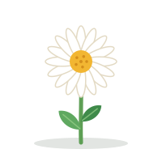
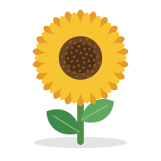
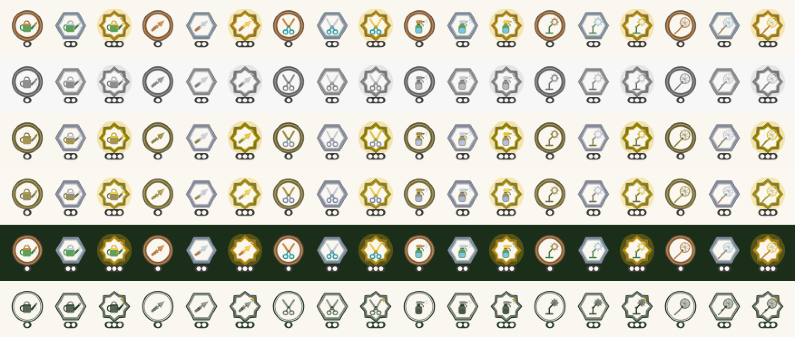

Six collectible tools, three tiers each. The player starts with the watering can and trowel; the other four are earned (unlock order below). Upgrades cost shed points. Picking a tool up puts it in the player's hand; tapping a plant uses it. Wilting is cosmetic only (see the droopy plant).
9:41100%
‹Garden Shed⭐ 42 pts
You start with a watering can and a trowel. New tools are earned by playing and never bought. Upgrades use shed points.
Watering canTier 1 of 3. Waters 1
TrowelTier 1 of 3. Richer soil boost each tier
Butterfly net🔒 Finish Level 1
Mister🔒 Reach Level 2
Pruning shears🔒 Earn the First Bloom badge
Sun lamp🔒 Reach Level 3
Next upgrade: Trowel tier 2 · 30 pts (you have 42)
Shed at the start: can and trowel owned, four locked with how to earn them.
9:41100%
‹My Garden💧 5
Watering can in hand. Tap a plant.


Garden with a tool in hand and the tool tray.
9:41100%
‹Daisy
💧 Droopy
Droopy plants perk right up with a drink
Droopy is only a look. Plants never die, lose a level or go backwards.
Droopy plant: cosmetic, never dies.
Unlock order
Watering can: Starter tool
Trowel: Starter tool
Butterfly net: Finish Level 1
Mister: Reach Level 2
Pruning shears: Earn the First Bloom badge
Sun lamp: Reach Level 3
Starter tools cost nothing. Tier upgrades: T2 30 pts, T3 120 pts per tool.
2. Tool icons: 6 tools x 3 tiers, colour and monochrome
Tier is never colour-only: plate shape (bronze circle, silver hexagon, gold 8-point star), one to three concentric rim lines, a collar or band on the tool from tier 2 and a spark from tier 3, and one to three pips (about 5 px at 40 px) on a dark pill. Bronze #8C5A2B, silver #A9BCD0 with a 1.5 px #3B3B3B outline, gold #F2B705 with a static gold halo (hidden under Reduce Motion). Mono uses currentColor for widgets, Lock Screen and tinted. SVG sources: v4/svg/tools/.
Tier 1 bronze
Tier 2 silver
Tier 3 gold
Mono T1
Mono T2
Mono T3
Watering can
Trowel
Pruning shears
Mister
Sun lamp
Butterfly net
Legibility check at 40 px
Rows top to bottom: colour on cream, greyscale, protanopia, deuteranopia, colour on dark green, mono. Shapes, rims and pips stay distinguishable in every row.

VoiceOver labels
Tool
Tier 1
Tier 2
Tier 3
Watering can
Watering can, tier 1 of 3, bronze
Watering can, tier 2 of 3, silver
Watering can, tier 3 of 3, gold
Trowel
Trowel, tier 1 of 3, bronze
Trowel, tier 2 of 3, silver
Trowel, tier 3 of 3, gold
Pruning shears
Pruning shears, tier 1 of 3, bronze
Pruning shears, tier 2 of 3, silver
Pruning shears, tier 3 of 3, gold
Mister
Mister, tier 1 of 3, bronze
Mister, tier 2 of 3, silver
Mister, tier 3 of 3, gold
Sun lamp
Sun lamp, tier 1 of 3, bronze
Sun lamp, tier 2 of 3, silver
Sun lamp, tier 3 of 3, gold
Butterfly net
Butterfly net, tier 1 of 3, bronze
Butterfly net, tier 2 of 3, silver
Butterfly net, tier 3 of 3, gold
3. Pickup and use animations
Live loops, 2.6 s each. Haptic and sound notes under each. Toggle Reduce Motion (top right) to see the static version.
Pickup
The tool lifts off the shed shelf, grows 12% and bobs while carried; the plant it hovers over gets a soft ring.
Haptic: light selection tick on lift, another on drop onto a plant. Sound: short wooden clack.
Pour
Tilts 34 degrees over the plant, drops fall 0.55 s loops, plant perks up at the end.
Haptic: Soft continuous haptic 0.4 s fading in, a light tick per plant watered (tier 2 and 3 water 2 and 3 plants in sequence). Sound: Gentle water trickle 0.8 s; pitch rises one step per extra plant.
Scoop
Dips into the soil, lifts a scoop, crumbs fly, plant swells 7% (growth).
Haptic: One soft impact on dig, one light on release. Sound: Low earthy thud then a soft sprinkle.
Snip
Blades close twice, a few clippings fall and fade. Cosmetic fullness improves.
Haptic: Rigid light tick on each snip, success tap when the stem is done. Sound: Crisp snip click, quieter at tier 1.
Mist
Short press, fine spray cone drifts to the plant and fades.
Haptic: Three very light taps (0.1 s apart). Sound: Airy pssht, 0.5 s, filtered noise.
Glow
Lamp slides in, warm glow pulses, plant brightens slightly then returns.
Haptic: Rising soft haptic (success style, low intensity). Sound: Warm two-note chime, then a low hum that fades.
Net swoosh
Arc sweep, golden trail draws and fades; a catch adds a small sparkle burst.
Haptic: Soft medium impact at swing start; success notification when something is caught. Sound: Filtered whoosh sweep up (0.3 s); catch adds a bell chime.
Tool
Use haptic (UIImpact / CoreHaptics)
Sound
Pour
Soft continuous haptic 0.4 s fading in, a light tick per plant watered (tier 2 and 3 water 2 and 3 plants in sequence).
Gentle water trickle 0.8 s; pitch rises one step per extra plant.
Scoop
One soft impact on dig, one light on release.
Low earthy thud then a soft sprinkle.
Snip
Rigid light tick on each snip, success tap when the stem is done.
Soft medium impact at swing start; success notification when something is caught.
Filtered whoosh sweep up (0.3 s); catch adds a bell chime.
All haptics respect the system setting and an in-app Haptics toggle; sounds follow the silent switch and are off by default in the first release unless the user enables them. Reduce Motion: skip the tool travel, show the tool at its use pose and the result particles only (see the Reduce Motion toggle above).
4. Repot flow
Four soils with swatches: loam, sandy, peaty, rich compost. A matching soil gives a happy reaction and faster growth; a mismatch is only slower, never harmful, and gets an encouraging tip.
9:41100%
‹Daisy
Stage 3 of 5 · Growing
WaterFeedRepotPruneMistSunny spot
Plant page with activity chips.
9:41100%
‹Choose soil
Every soil works. Matching the plant's favourite helps it grow faster.
LoamAll-rounder
SandyDrains fast · ★ Daisy likes this
PeatyHolds moisture
Rich compostFull of nutrients
Pick a soil; the plant's favourite is starred.
9:41100%
✕Repotted
✦✦✦✦✦
☺ Happy! Sandy suits Daisy
Grows faster now
+15 growth points · Soil Scientist progress 1/3
Match: happy reaction.
9:41100%
✕Repotted
🙂 Settled in
Growing at its own pace
+5 growth points · Tip: Daisy likes Sandy soil
Mismatch: neutral, calm, no negative language.
Loam
All-rounder
Sandy
Drains fast
Peaty
Holds moisture
Rich compost
Full of nutrients
5. Prune minigame
Drag the shears along glowing stems. Cosmetic fullness plus a small bonus. No timer, no fail, a visible skip.
9:41100%
✕Prune✂️ Tier 2
Drag the shears along each glowing stem. No timer.
✔ 2○ 3 left
Prune: highlighted stems, progress chips, skip is equal weight.
6. Shed-points shop (cosmetic sink)
The economy sink for shed points: 12 cosmetic items from 20 to 200 pts (pots, plant labels, garden decor). Nothing changes growth; never for money; prices are visible with the points still needed, no timers or limited-time offers.
9:41100%
‹Garden Shop⭐ 42 pts
PotsLabelsDecor
Spend shed points on looks only. Nothing here changes how plants grow, and it is never sold for money.
Terracotta potOwned
Speckled stoneware40 pts
Hanging basket70 pts · 28 to go
Mossy planter90 pts · 48 to go
Pots
9:41100%
‹Garden Shop⭐ 42 pts
PotsLabelsDecor
Spend shed points on looks only. Nothing here changes how plants grow, and it is never sold for money.
Wooden stake20 pts
Brass plate35 pts
Slate tag50 pts · 8 to go
Labels
9:41100%
‹Garden Shop⭐ 42 pts
PotsLabelsDecor
Spend shed points on looks only. Nothing here changes how plants grow, and it is never sold for money.
Stepping stones80 pts · 38 to go
Fairy lights100 pts · 58 to go
Bird bath130 pts · 88 to go
Garden bench160 pts · 118 to go
Butterfly house200 pts · 158 to go
Decor
9:41100%
✕Mossy planter
Mossy planter
A cosy stone pot with a soft green top. Looks lovely on any plant.
⭐ 90 pts
You have 132 pts, you would have 42 left.
Item detail and purchase
7. Widget activity chips and active-tool state
Small, medium and Lock Screen. The active tool shows as a filled chip; resting chips are dashed with the time until ready, no warning colours. Lock Screen uses the mono icon.
💧 5
Daisy · Watering can
💧 5
Daisy · Watering can
Daisy
Active tool
💧 Can T2 · ready🌱 Soil☀️ Sun💨 Mist · 2h
Tap a chip to use it. Dashed = resting, not a penalty.
Daisy
Active tool
💧 Can T2 · ready🌱 Soil☀️ Sun💨 Mist · 2h
Tap a chip to use it. Dashed = resting, not a penalty.